Module 9 — Alarms and Events | Pages 573-600
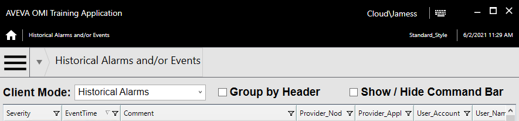
Lab 20 – Creating a Historical Alarm Display
Lab 20 – Creating a Historical Alarm Display
Introduction
In this lab, you will use the AlarmApp to create a display for historical alarms and events. You will
also create an additional symbol with configurations to help view and organize historical alarms
and events at runtime.
When testing the historical AlarmApp display, you will see how to query logged alarms and events
from the historical alarms and events views. You will also see how to use the custom symbol to
change the AlarmApp settings at runtime.
Objectives
Upon completion of this lab, you will be able to:
Configure the AlarmApp to display historical alarms and events
Use the AlarmApp to query logged alarms and events at runtime
Customize the AlarmApp at runtime using Runtime Behavior properties
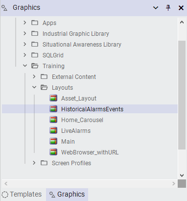
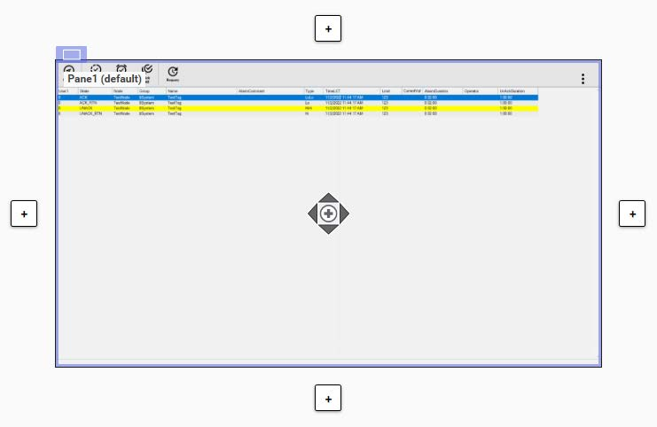
Configure Layouts for Historical Alarms and Events
In the following steps, you will create and configure a new layout for historical alarms and events.
1.
On the Graphics tab, in the Training \ Layouts toolset, create a new layout and name it
HistoricalAlarmsEvents.
2.
Double-click HistoricalAlarmsEvents to open it in the Layout Editor.
3.
On the Toolbox tab, enter a search string to find the AlarmControl and drag it to Pane1.
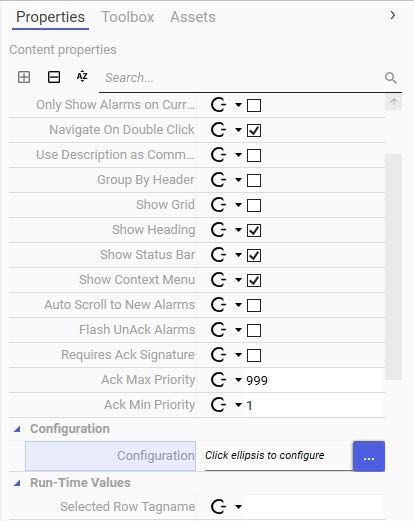
Lab 20 – Creating a Historical Alarm Display
4.
On the Properties tab, to the right of the Configuration property, click the ellipsis button.
The Configuration dialog box appears.
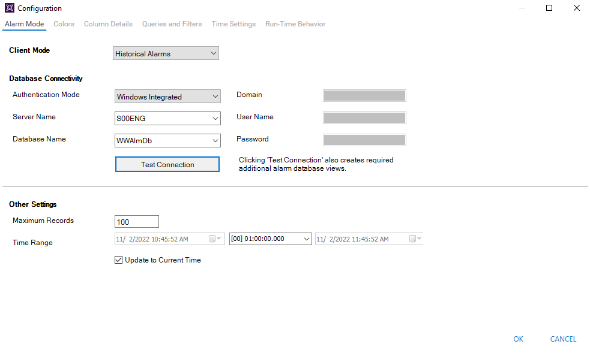
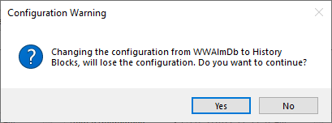
5.
On the Alarm Mode tab, change Client Mode to Historical Alarms.
6.
For Database Connectivity \ Server Name, enter the node where Historian is set up.
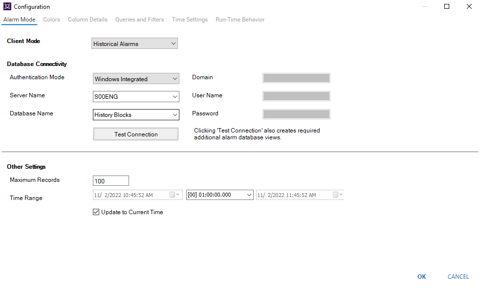
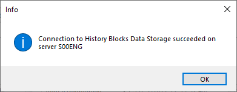
Lab 20 – Creating a Historical Alarm Display
8.
Click Yes to continue.
9.
Click Test Connection.
When the connection test is successful, the following Info message appears:
10. Click OK to dismiss the message.
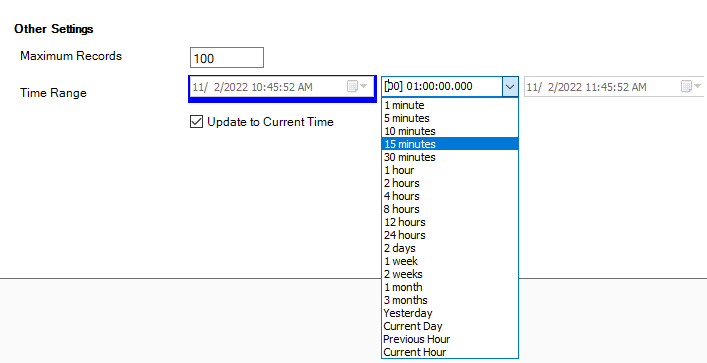
11. In the Other Settings area, Time Range duration field, click the drop-down arrow and select
15 minutes.
The duration determines the total number of records returned.
12. On the Column Details tab, uncheck the following columns, which are repeated or
unnecessary for the historical alarms and events display.
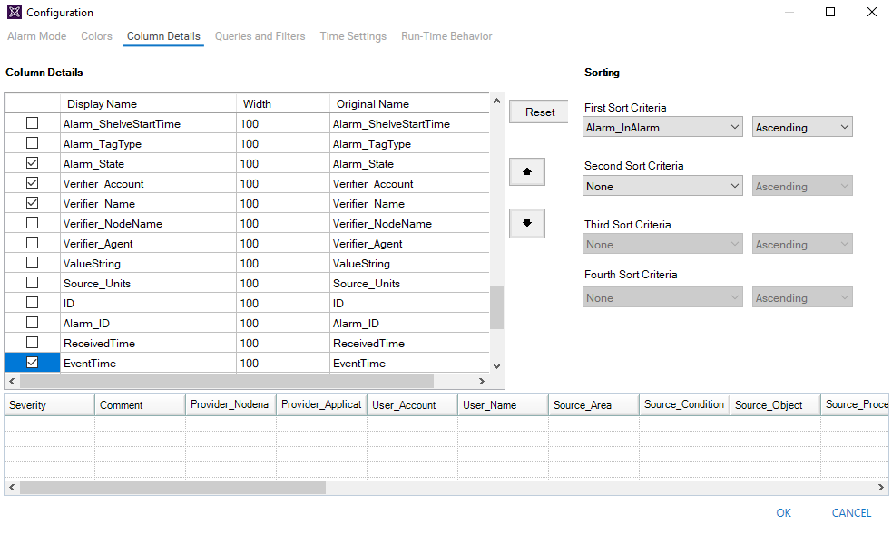
Lab 20 – Creating a Historical Alarm Display
13. On the Column Details tab, check the following columns, which will be useful for the historical
alarms display:
Severity
Comment
Provider_Nodename
Provider_ApplicationName
User Account
User Name
Source_Area
Source_ConditionVariable
Source_Object
Source_ProcessVariable
Alarm_Type
Alarm_Condition
Alarm_LimitString
Alarm_State
Verifier Account
Verifier Name
EventTime
The following shows only some of the checked column names in the Column Details list.
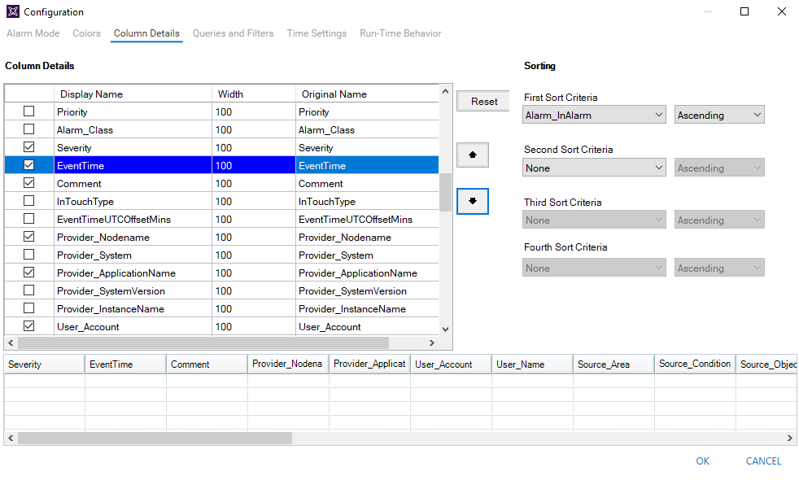
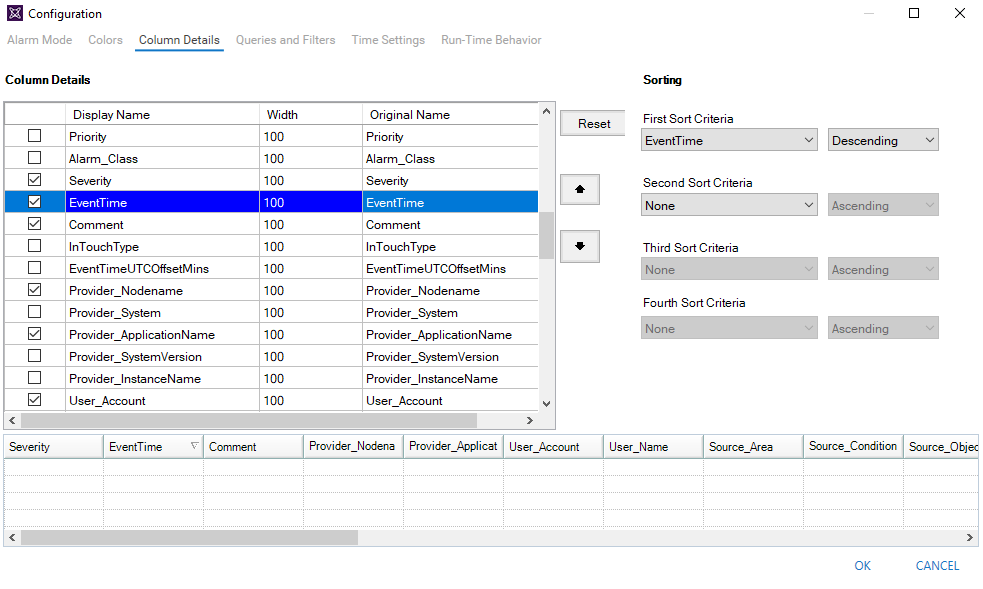
14. With EventTime checked, to the right of the Column Details list, click the up-arrow multiple
times until EventTime is moved above Comment and below Severity in the list.
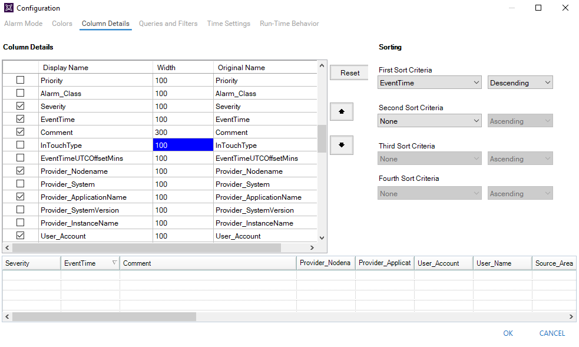
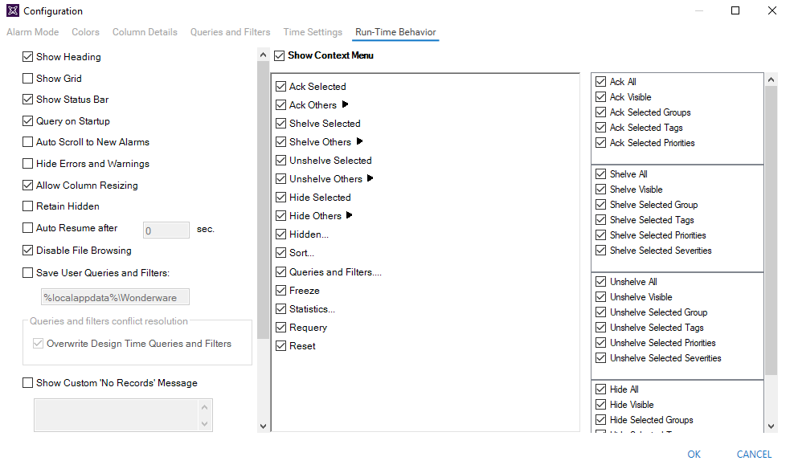
• Highlighted Action: Red rectangle around "Save User Queries and Filters" (unchecked)
• Sub-settings: File path field (greyed out), "Overwrite Design Time Queries and Filters" (unchecked)
• Right Pane - Show Context Menu: Commands: Ack Selected, Ack Others, Shelve Selected, Unshelve Selected, Hide Selected, Sort, Queries and Filters, Freeze, Requery
• Context: Configuring column width and runtime behavior for historical alarm display]
Lab 20 – Creating a Historical Alarm Display
16. In the Column Details list, in the Comment row, select the Width field.
17. Click the Width field, change the value to 300, and then press Enter to confirm.
18. On the Run-Time Behavior tab, uncheck Save User Queries and Filters.
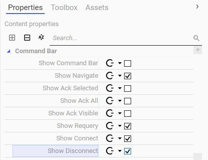
19. Click OK to close the Configuration dialog box.
20. On the Properties tab, configure the Command Bar properties as follows:
21. Save and close the HistoricalAlarmsEvents layout, and check it in.
Show Command Bar:
unchecked
Show Ack Selected:
unchecked
Show Ack All:
unchecked
Show Ack Visible:
unchecked
Show Connect:
checked
Show Disconnect:
checked
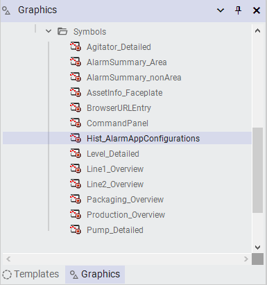
Lab 20 – Creating a Historical Alarm Display
Create a Symbol for Additional Settings
In the next steps, you will create a symbol and configure custom properties for it.
22. On the Graphics tab, in the Training \ Symbols toolset, create a new symbol and name it
Hist_AlarmAppConfigurations.
23. Double-click Hist_AlarmAppConfigurations to open it in the Graphic Editor.
24. Right-click the drawing canvas and select Custom Properties.
The Edit Custom Properties dialog box appears.
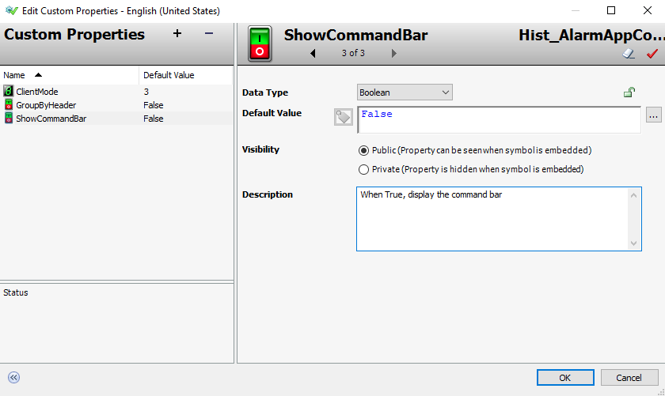
25. In the Edit Custom Properties dialog box, create the following custom properties:
26. Click OK to close the Edit Custom Properties dialog box.
Name
Data Type
Default Value
Description
ClientMode
Integer
3
3-Historical Alarms; 4-
Historical Events; 5-Historical
Alarms and Events
GroupByHeader
Boolean (default)
False (default)
When True, enable group by
header for the alarm grid
ShowCommandBar
Boolean (default)
False (default)
When True, display the
command bar
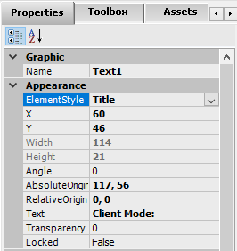
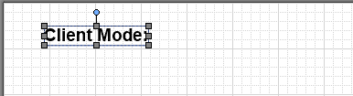
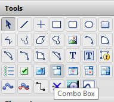
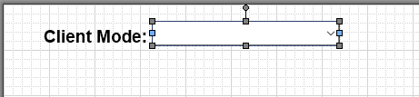
Lab 20 – Creating a Historical Alarm Display
27. In the Tools pane, select the Text tool, add a text element to the canvas, and then enter Client
Mode: for the string.
The name of the text element is Text1.
28. With Text1 selected, change its Appearance / Element Style property to Title.
Text1 should look similar to the following on the drawing canvas:
29. In the Tools pane, select the Combo Box tool and add a combo box element to the drawing
canvas.
The name of the combo box element is ComboBox1.
30. Place ComboBox1 to the right of the Text1 element.
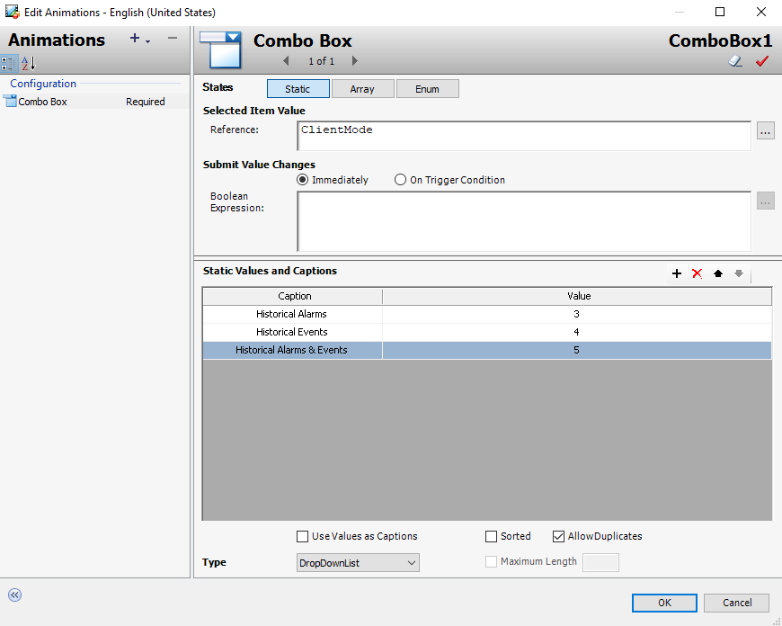
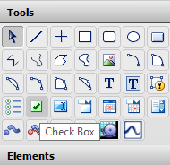
31. Double-click the ComboBox1 element to open the Edit Animations dialog box.
32. For States, ensure Static is selected and configure the Selected Item Value (Reference) as
ClientMode.
33. For Static Values and Captions, change Caption and Value as follows:
34. Leave the other settings as default, and click OK to close the Edit Animations dialog box.
35. In the Tools pane, select the Check Box tool.
Caption
Value
Historical Alarms
3
Historical Events
4
Historical Alarms & Events
5
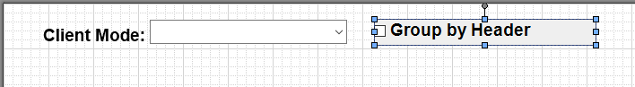
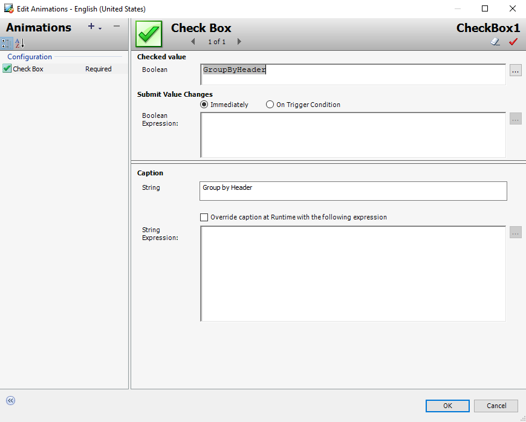
Lab 20 – Creating a Historical Alarm Display
36. On the drawing canvas, add a check box element to the right of the ComboBox1 element.
The name of the check box element is CheckBox1.
37. On the Properties tab, configure the following properties for CheckBox1:
38. Resize the width of the CheckBox1 element to display all of the characters.
39. Double-click CheckBox1 to open the Edit Animations dialog box.
40. Configure the Checked value (Boolean) reference as GroupByHeader.
41. Leave the other settings as default, and click OK to close the Edit Animations dialog box.
Appearance / Element Style:
Title
Text Style / Caption:
Group by Header
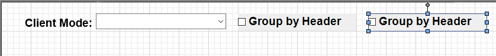
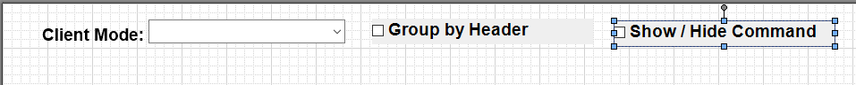
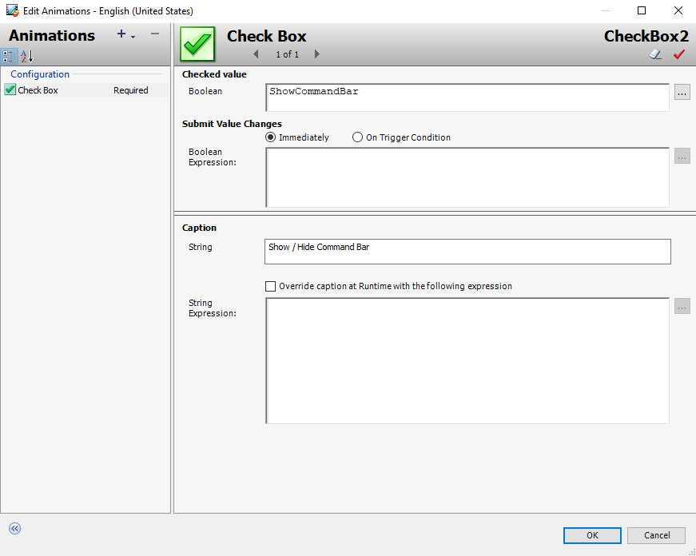
42. Duplicate CheckBox1 to create a CheckBox2 element, and place CheckBox2 to the right of
CheckBox1.
43. For CheckBox2, configure the Text Style \ Caption property to Show / Hide Command Bar.
44. Resize the width of the CheckBox2 element to display all of the characters in one line.
45. Double-click CheckBox2 to open the Edit Animations dialog box.
46. Configure the Checked value (Boolean) reference as ShowCommandBar.
47. Leave the other settings as default, and click OK to close the Edit Animations dialog box.
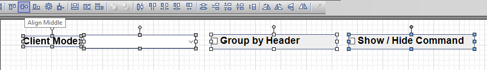
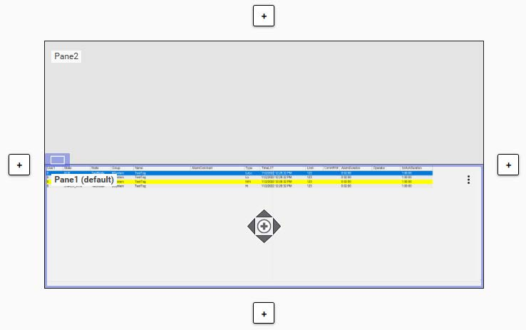
Lab 20 – Creating a Historical Alarm Display
48. With all elements selected, click Align Middle to align the elements to the middle.
49. Save and close the Hist_AlarmAppConfigurations symbol, and check it in.
Update the HistoricalAlarmsEvents Layout
In the following steps, you will assign the symbol to the HistoricalAlarmsEvents layout and
configure some references using the custom properties configured for the symbol.
50. On the Graphics tab, in the Training \ Layouts toolset, double-click HistoricalAlarmsEvents
to open it in the Layout Editor.
51. With Pane1 selected, add a new pane on top of Pane1.
The name of the new pane is Pane2.
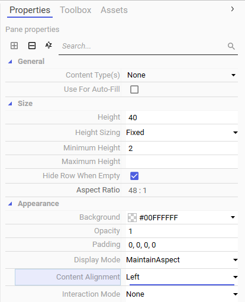
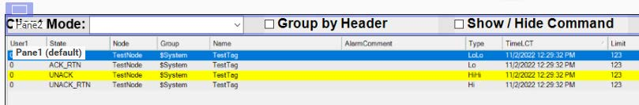
52. Select Pane2 and configure the following properties:
53. On the Toolbox tab, enter a search string to find Hist_AlarmAppConfigurations and drag it
to Pane2.
Size \ Height:
40
Size \ Height Sizing:
Fixed
Appearance \ Content Alignment:
Left
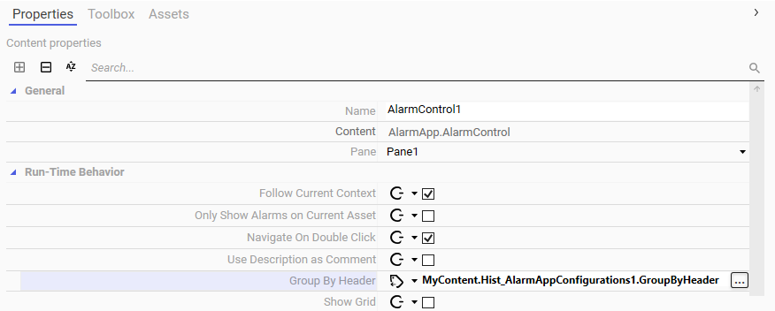
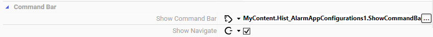
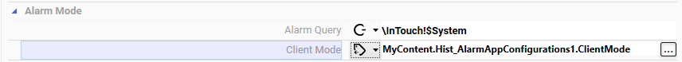
Lab 20 – Creating a Historical Alarm Display
54. Ensure that Pane1 is selected.
55. On the Properties tab, for the Run-Time Behavior \ Group by Header property, click the
down-arrow to the left of the check box and select In from the drop-down list.
This changes the binding mode for the property to Dynamic and you can use a reference or
expression in the value field.
56. To the right of the property, in the value field, enter the following:
MyContent.Hist_AlarmAppConfigurations1.GroupByHeader
57. Repeat Steps 55-56 for the following properties:
The following shows the Command Bar \ Show Command Bar property:
The following shows the Alarm Mode \ Client Mode property:
58. Save and close the HistoricalAlarmsEvents layout, and check it in.
Property Name
Binding Mode
Reference
Command Bar \
Show Command Bar
In
MyContent.Hist_AlarmAppConfigurations1.ShowCommandBar
Alarm Mode \
Client Mode
In
MyContent.Hist_AlarmAppConfigurations1.ClientMode
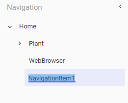
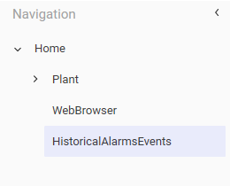
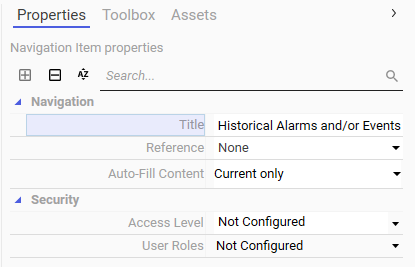
Associate HistoricalAlarmsEvents with a Navigation Item
In the following steps, you will create a new navigation item in the ViewApp Editor and configure it
to display historical alarms and events.
59. In the ViewApp Editor, in the Navigation list, select Home, and then click Add to add a new
child navigation item under Home.
60. Rename the new navigation item to HistoricalAlarmsEvents.
61. On the Properties tab, change the Navigation \ Title property to
Historical Alarms and/or Events.
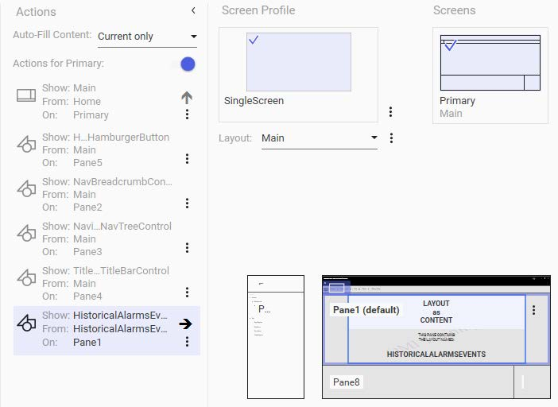
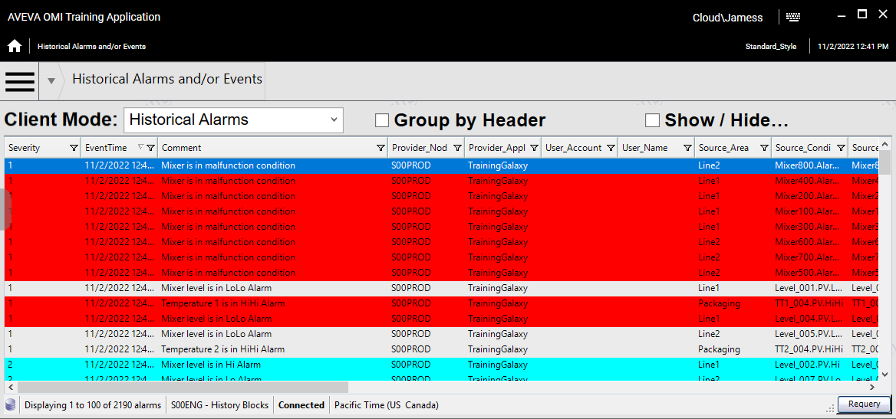
Lab 20 – Creating a Historical Alarm Display
62. With the new navigation item selected, on the Toolbox tab, enter a search string to find
HistoricalAlarmsEvents and drag it to Pane1.
You can confirm the assignment in the Actions list.
Test the ViewApp in a Preview Session
Now you will test your changes in the preview session.
63. Click Update to update the preview session.
The preview session opens with HistoricalAlarms and/or Events displayed.
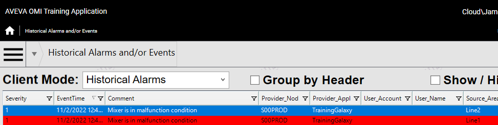
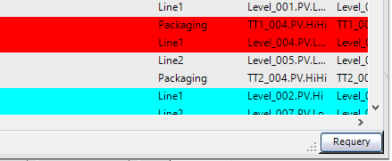
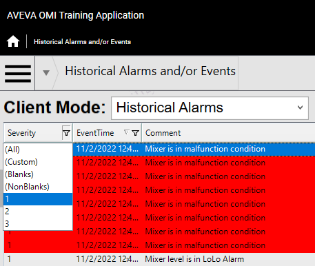
Notice the column headings that you configured for the control, and filter icons appear in the
column headings.
Also notice that a Requery button appears at the bottom of the display to the right of the status
bar.
64. On the Severity column heading, click the filter icon, and select 1 from the Severity list.
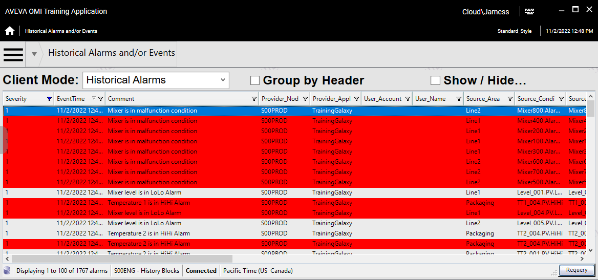
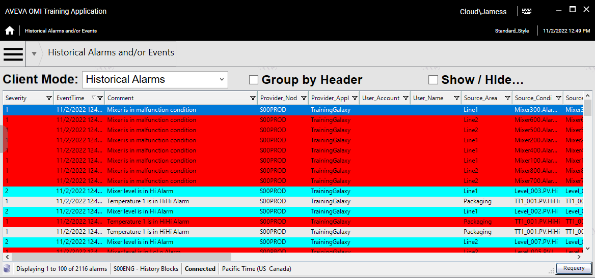
Lab 20 – Creating a Historical Alarm Display
The display filters all Severity 1 alarms.
65. Click Requery to update records for the last 15 minutes.
Notice the severity filter is reset after clicking Requery. You can also reset the filter by
selecting (All) from the filter selector of the Severity column.
On the status bar, the number of records may change every time records get updated.
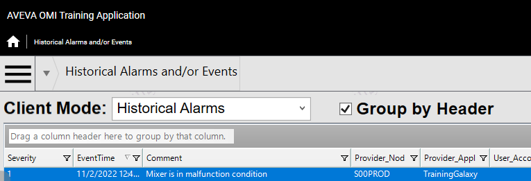
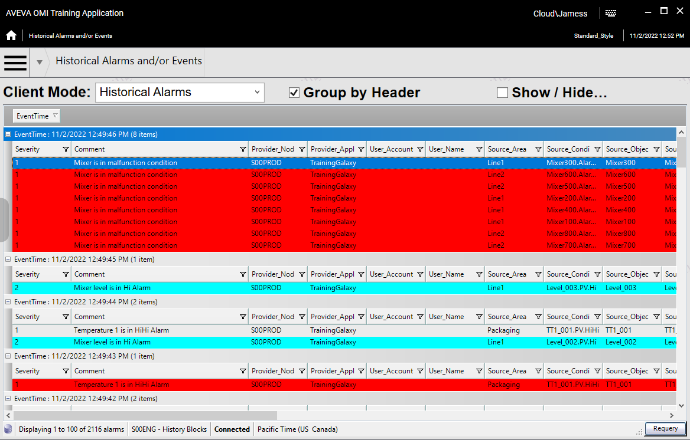
66. At the top of the HistoricalAlarms and/or Events display, check Group by Header.
Notice that a group-by field appears, with the tip Drag a column header here to group by
that column.
67. Drag the EventTime column to the group-by field.
Notice that alarm records are grouped by different event times.
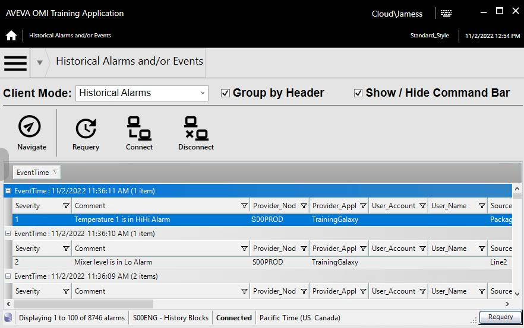
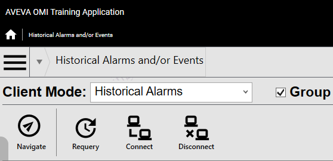
Lab 20 – Creating a Historical Alarm Display
68. On the HistoricalAlarms and/or Events display, check Show / Hide Command Bar.
Notice that the command bar appears, with buttons to Navigate, Requery, Connect, and
Disconnect.
69. From the command bar, click Requery.
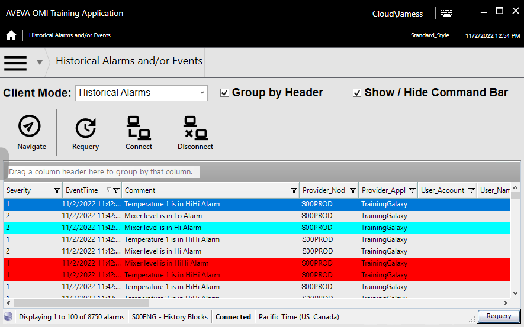
Notice the group-by field is reset, because Requery resets the grouping.
Lab 20 – Creating a Historical Alarm Display
73. For Client Mode, select Historical Events.
Notice the recent operational events are listed in the event display, and they are sorted by
Event Time in descending order.
Review the lab steps above and list the main configuration actions you completed.
Consider the dependencies between steps and how skipping one might affect the outcome.